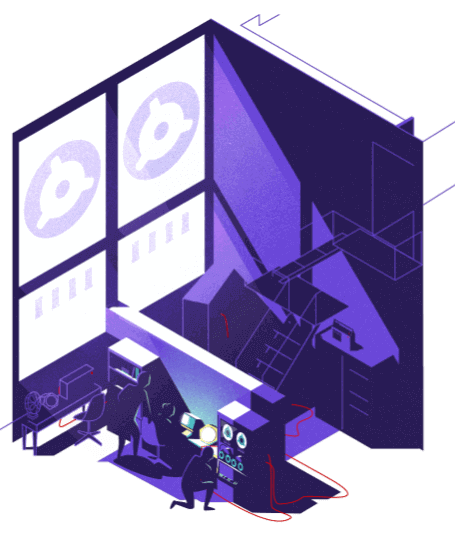
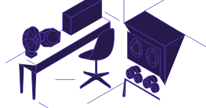

Subscribe to the podcast to receive new episodes as soon as we release them

They don’t fit in your pocket. But in their day, minicomputers were an order of magnitude smaller than the room-sized mainframes that preceded them. And they paved the way for the personal computers that could fit in a bag and, eventually, the phones in your pocket.
16-bit minicomputers changed the world of IT in the 1970s. They gave companies the opportunity for each engineer to have their own machines. But it wasn’t quite enough, not until the arrival of 32-bit versions.
Carl Alsing and Jim Guyer recount their work at Data General to create a revolutionary new 32-bit machine. But their now legendary work was done in secret. Codenamed “Eagle,” their machine was designed to compete with one being built by another team in their own company. These engineers recall the corporate politics and intrigue required to keep the project going—and how they turned restrictions into advantages. Neal Firth discusses life on an exciting-but-demanding project. One where the heroes worked together because they wanted to, without expectations of awards or fame. And all three discuss how this story was immortalized in the non-fiction engineering classic, The Soul of a New Machine by Tracy Kidder.
00:03 - Saron Yitbarek
The year was 1978 and a battle was raging in the mini-computer industry. Just a year earlier, Digital Equipment Corporation released its 32-bit VAX 11 780 computer. It was much more powerful than the 16-bit machines in the market. Sales of the VAX quickly overtook their slower competition. Archrival, Data General, was desperate for a new machine to compete with the VAX. They needed a 32-bit computer of their own and they needed it fast, but that competition between Data General and DEC wasn't the only battle going on. There was also a turf war brewing inside Data General and the spoils of both wars would be the creation of an incredible machine under incredible circumstances. A 13-inch laptop weighs maybe three pounds. We take for granted our computers’ portability and convenient size, but back in the 70s, most computers were still room-sized mainframes, multi-million dollar machines weighing several tons. Then, when hardware costs plummeted, the race to smaller, faster, cheaper machines began. The mini computer opened the door for engineers and scientists to have a terminal of their own. It was the machine that led us to where we are today.
01:37 - Saron Yitbarek
Last season on Command Line Heroes, we took a deep dive into an area that is central to software development, the world of programming languages. We looked at their history, the problems they solved, and how they've evolved over time. Languages like JavaScript, Python, and C, Perl, COBOL, and Go. This season, season four for those of you counting, we are diving deep again, this time into the hardware that our software runs on. We're going to tell you seven special stories about the people and teams who dared to change the rules of hardware. That laptop on your desk, that phone in your pocket, command line heroes put their soul into every piece of hardware you've owned and heroes before them. Their passion for building their bold moves to make our hardware a reality has revolutionized the way we program today.
02:36 - Saron Yitbarek
I'm Saron Yitbarek and this is Command Line Heroes, an original podcast from Red Hat.
02:45 - Saron Yitbarek
In our season premiere, the story of an engineering team racing to design, debug, and deliver a next-generation computer. Their work became the subject of the 1981 bestseller and Pulitzer-winning book, The Soul of a New Machine by Tracy Kidder. The book follows many of the guests you'll hear in this episode.
03:07 - Saron Yitbarek
Back to Data General. Company president, Ed de Castro, hatches a plan to compete with DEC. He splits up the engineering department, moving a team from its Westboro, Massachusetts headquarters to a new office in North Carolina. Their assignment? Develop an advanced 32-bit design that would crush the VAX. They named their project, Fountainhead. De Castro gave the team almost unlimited support and resources. Fountainhead was going to be his company's savior. The few remaining engineers left behind in Massachusetts, they felt seriously slighted. They knew they could build a VAX killer, probably a better one than what Fountainhead could build, but de Castro wouldn't give them a chance. So the leader of that group, Tom West, decided to take matters into his own hands. A self-taught computer engineer, Tom West ran Data General's Eclipse division. Eclipse was data General's most successful line of 16-bit mini computers. Tom could build machines, he could ship them, and he knew what the market wanted. After setting up Fountainhead, de Castro told the remaining engineers to keep working on improving last year's product line. Tom and the others were unimpressed.
04:31 - Carl Alsing
We were not happy with that at all. Some of us left for other jobs and others of us were depressed and worried about our careers and not feeling very excited. And we predicted that the other group was going to fail.
04:46 - Saron Yitbarek
Carl Alsing was the manager of the micro programming group at Data General. He was Tom's second in command. They decided to come up with their own project.
04:56 - Carl Alsing
This'll be a whole new design using the latest techniques, build a 32-bit computer that would beat the DECs’ VAXs. So we put together a proposal for that and went to the president, Ed de Castro, and he says, "Nope, no way. No, the North Carolina groups taking care of that. You don't have to worry about it." So we were discouraged and we went back and came up with another proposal called Victor. We looked at ways of making the old last year's product better. And we had in there a little switch, a mode bit in the system, that when you turned it on, it would enable the computer to act like a modern 32-bit mini computer, although slow. And we took that to Ed de Castro and proposed it. And at the end he said, "You have a mode bit in here. I don't want to see any design with a mode bit. North Carolina's taking care of the new designs." So again, we were discouraged and I think this is when Tom West decided that we were going to do something clandestine.
06:06 - Saron Yitbarek
Tom came up with two stories. One was for de Castro. They would work on an enhancement of the old Eclipse product line, make it a little faster, add a few new buttons, a different color. Tom pitched it as insurance just in case something went wrong in North Carolina. De Castro approved it. And then Tom told another story, a better story to his team.
06:32 - Carl Alsing
So Tom West proposed to a few of us in the team that we build a really good modern machine that's completely compatible with the previous machines and did all the latest high tech stuff that we needed and virtual memory and 32-bits and error correcting codes and all those kinds of things. Multitasking, multiprocessing, lots of memory. "Guys, we're going to build the latest market-killing new machine."
07:04 - Saron Yitbarek
The code name for this market-killing new machine, was the Eagle. Nowadays, it feels like there's no limit to what you can do with the memory built into our computers, but back then, a big breakthrough happened when 16-bits gave way to 32-bits. All of a sudden, your address space went from 65,000 bytes of information to over 4 billion. And with that increase, software could deal with larger amounts of data. That left computer companies with two basic challenges: transitioning from 16-bits to 32-bits, sure, but they also had to keep their old customers, the ones using the old software, happy. So, they had to create a machine that would keep old software running, a 32-bit computer that could be backward compatible. The VAXs, for all its power, didn't have an elegant solution to that second problem, but Tom was determined that his Eagle would.
08:14 - Saron Yitbarek
Eagle HQ was located in the basement of Westborough building, 14 AB. Tom assigned Carl to head up micro coding. Carl assigned Chuck Holland to manage the coders, who became known as the Micro Kids. Meanwhile, Ed Rasala would oversee hardware. He assigned Ken Holberger to manage that team, which was appropriately called the Hardy Boys. Tom had an ally in VP of Engineering, Carl Carman. Carman also had a bone to pick with de Castro because de Castro refused to put him in charge of the North Carolina group.
08:51 - Carl Alsing
Carl Carman knew what we were up to and said nothing to his boss. And so he was funding us, but we needed to keep the salaries down, and we needed some really good smart engineers. So we decided to go after college recruits. One advantage of that is that they don't know what you can't do. They think that you can do anything.
09:15 - Saron Yitbarek
Jim Guyer was two years out of college and working at Data General when he got assigned to the Hardy boys.
09:21 - Jim Guyer
The machine that was being developed down in North Carolina was much more high-end computing, almost mainframe in nature. And well, I mean, that's a pretty big thing to jump into to compete with IBM and the other mainframe companies at the time. We thought we had the edge because we were trying to do something that was not quite as ambitious and we were really, really, really focused on a neat, clean, simple implementation with low cost and fewest components and so forth.
09:51 - Saron Yitbarek
Low cost, simple design. They realized that they needed to use firmware to control everything. The more functionality they could put under firmware as opposed to hardware, the cheaper and more flexible it could be.
10:03 - Saron Yitbarek
And they'd be able to make changes as needed. Of course, modern-day computers are all built this way, but in 1978 the approach was brand new.
10:15 - Carl Alsing
The kind of design we were doing was very minimal. We were looking at ways of making things simple and straightforward, uncomplicated. Because we knew that it couldn't grow to be a big, expensive machine. It had to be just a few boards, a few circuits, and that's actually an advantage in making it fast. There's a difference between designing a product that's safe, risk-free, and a product that's going to win. And we were not worried about risk. We were worried about winning. We wanted it to be fast and cheap and we wanted to design it quickly. So, we only had three or four boards in there, a minimum amount of hardware, and we made up for that with firmware.
11:06 - Saron Yitbarek
The Eagle team faced a lot of tough constraints. The VAX was the highest performance, 32-bit computer on the planet. Eagle had to match it. But on top of that, it had to be compatible with their 16-bit architecture, too. Getting all that done with less money and time than any other team, made Eagle feel like a serious gamble. But Tom West's team was all in.
11:32 - Jim Guyer
There were two systems running 24/7 that we had two shifts of engineers working on them. We all have to be trying to figure out everything. So, we had to learn what everybody else's part did. That was both challenging and extremely educational for me. But we were all engaged with each other to try and go, "What's the next step to figure out this problem? What do we need to look at?" Everybody poring through schematics and other pieces of documentation to figure out, "Look at this signal, look at that computer state, look at the sequence of steps that the microcode is going through. Is it doing the right thing? Oh wait, it's going the wrong direction. Uh oh, why did it do that?"
12:13 - Carl Alsing
This was serious business and that was the work ethic. It was intense in the group. There were sometimes arguments about which way to do something. There might be one way that costs a little bit more money and another way that was cheaper but not as fast or not as effective. And there'd be heated discussions and meetings with some effort to make a consensus. And we made those choices though. And then we worked together.
12:44 - Carl Alsing
We worked day and night, we divided up the hours for the prototype. We only had two prototypes and it was really important that both teams get to work on those prototypes. So, there were people working the night shift and people working the day shift and people getting tired. But there was enough excitement about it that it was rewarding. And so nobody complained too much about the working conditions.
13:11 - Saron Yitbarek
The working conditions. Some accounts from that time say that to get what he wanted from the team, Tom West practiced something called mushroom management. Feed them [beep] and watch them grow. Inside a cramped and hot workspace, the hours were long and the schedules unrealistic. Tom himself has been described as enigmatic, cold, uncaring. One engineer even referred to him as the Prince of Darkness. Was Tom West so intent on winning that he exploited his team? Did he sacrifice the wellbeing of the Micro Kids and the Hardy Boys to get the perfect machine?
13:56 - Jim Guyer
Tom was an interesting guy to work with. He expected a lot of you, and he didn't give you a lot of direction. He expected you to figure out what you needed to do, and pretty much if you weren't able to do that, you weren't on the team.
14:10 - Saron Yitbarek
Direction came from Carl or Ed, the line managers that Jim and the rest of the team worked with on a daily basis. But these young engineers were also in it to win and they liked the opportunity they were given, to figure it out for themselves.
14:26 - Jim Guyer
I personally won the first honorary Micro Kid allnighter award. I don't know, maybe we were over competent, brash, young upstarts who didn't know any better. We were confident. We thought we were pretty smart and could figure things out, and we fed on each other's, maybe those are egos, in that sense. I was having a lot of fun doing it. I think most of us were having a lot of fun doing it.
14:56 - Saron Yitbarek
Carl disagrees with the term mushroom management. He said it was just the opposite. They all knew exactly what was going on and what was expected. It was upper management who didn't. At the same time, Tom West was under a tremendous amount of pressure from multiple fronts, and that pressure got passed along to the group.
15:18 - Carl Alsing
Tom was keeping the true nature of the project quiet. So, he didn't speak much to the engineers, and he remained aloof and he told them, of course, that they weren't to discuss the project outside the group or at home. Not even to use the word Eagle. So we also conveyed that this was very urgent, that we had to do this in a year, that the competition was already in the market, and if we were going to hit the peak of the market with this thing, we had to get it done now. And so they were under a lot of pressure and there was an expectation that they would work nights and weekends and there would be no time for going on picnics with their family or anything that wasn't work-related.
16:06 - Saron Yitbarek
I wanted to find out what it was like working in the trenches of Building 14 AB. So, I sat down with Neal Firth. He was one of the Micro Kids. He joined the team fresh out of school.
16:20 - Saron Yitbarek
What was it like to work for Tom West? Did you get to interact with him a lot?
16:24 - Neal Firth
Not necessarily. He was this ghosty figure. We saw him around. He tried not to interfere so that we could lead ourselves and achieve the goals. This was brand new stuff for what they were doing, and he didn't want to influence us by trying to impose things that had to be done for the previous generation of processors.
16:49 - Saron Yitbarek
It sounds like an intense place where you really want to keep moving and keep getting things done. How did you deal with the fact that there wasn't a ton of time?
16:57 - Neal Firth
It wasn't a factor to be honest. There was really no issue with there being enough time. We would take the time it took to achieve the result. That's where the spouses had to be very supportive and understanding, because they didn't necessarily say yes immediately. You could equate it to some of the Silicon Valley people at the time or the Jobs, Wozniak type, let's just get in and get this done. We are not quite all live-in-the-same-apartment and code-on-the-floor type people, but it had some of those characteristics.
17:35 - Saron Yitbarek
And during that time, what kept you going? Why were you so motivated?
17:39 - Neal Firth
Quite frankly it was solving a problem. I've always been a puzzle and problem-solving guy. In fact, most of the team was that way. All of us had that in our background, and we all enjoyed it. So, solving those puzzles, getting those things solved, discovering a way to do something that had never been done before.
18:01 - Saron Yitbarek
So what was your most memorable moment on the project?
18:05 - Neal Firth
At the time, it was quite a ways into the project, and we were running the microcode simulator, and it was actually running what was proposed to be the production simulator, and it had been running for about 10, 12 hours. And all of a sudden, the letter E shows up on the console and then we waited a little while and another letter, then another letter, and then we suddenly realized what we were running for test code was the diagnostics that were being designed to run. And so the microcode simulator was simulating the hardware running this microcode, and it was starting to print characters as if it was actually operating. So, it was maybe a hundred thousand times slower than real life, when it actually came out and operated, but that was one of my most memorable moments.
19:02 - Saron Yitbarek
Looking back on it now, do you feel like you were exploited?
19:07 - Neal Firth
No. I was aware of what was happening. I knew what was happening. So, no. I do not feel exploited. It was actually my expectations coming out of college, it would have never been that I would be in a project that significant, or have an opportunity to play such a significant role in a project like that.
19:31 - Saron Yitbarek
I'm wondering how you think about the sacrifice of invention, because if you think about all the great things that we make, usually we have to give up something, right? Something's got to give to make something truly amazing. Did that happen for you? And if so, what was that thing that you had to give up?
19:48 - Neal Firth
I wouldn't say that there was a thought-driven process on my part for giving up something. I think it was much more that I became a little more attuned to what I was doing and how I did it impacted those around me.
20:03 - Neal Firth
But I never necessarily saw it as a sacrifice, and the people I was close to, they lived in a world where that's just the way things happen. I hear the horror stories, if you will, about today, where 24/7 you wake up, you plug in your coffee IVs, grab some pizza or dim sum, and you start coding, and eventually you fall asleep in your keyboard. And then you wake up the next morning and repeat the process.
20:35 - Neal Firth
We certainly were nowhere near that level of sacrifice. I still had a wife, I still had friends, we still got together. It certainly wasn't a nine-to-five job, but it provided me with a lot of personal and technical achievement, and I was able to share that with my wife, and my sister, and my mother and my father, and my father-in-law. So, those people could appreciate that.
20:59 - Saron Yitbarek
Yeah. So, what do you think is the key to making something truly great?
21:06 - Neal Firth
Key to making something truly great. Interesting question. I think it depends on the people involved doing it, because they want to, not because they have expectations of achievement, or wealth or fame. Because those things are very fleeting and almost never satisfied. But if you're going in trying to achieve a goal, and you and a bunch of people work together on it and achieve it, that really is satisfaction when you achieve that.
21:42 - Saron Yitbarek
Neal Firth was one of the Micro Kids on the Eagle Project. He's currently the president of VIZIM Worldwide, a software company.
21:57 - Saron Yitbarek
As chronicled in Tracy Kidder's book, Tom West's aloofness and distance was deliberate. It was his attempt to keep a clear head above all the day-to-day chatter so that Eagle's goal could remain intact. Even more than that though, he wanted to protect the team, isolate them from the politics and corporate brinkmanship happening around them. He also protected the Micro Kids and the Hardy Boys from preconceived ideas about what was possible.
22:28 - Saron Yitbarek
In 1980, the Eagle was complete. A year later than Tom had promised, but done nonetheless, unlike Fountainhead. Just as the senior team had predicted, the Fountainhead group had failed and their project was shelved. Here's Bill Foster, director of software development at the time, on Fountainhead's struggle.
22:50 - Bill Foster
I think the biggest mistake that was made was it wasn't given any limitations. More or less, it was let's do the world's best computer. Well, when should it be done? Oh, we don't really have a date for that. How much should it cost? Well, we're not sure about either. And I have to fail Ed with this. He didn't put enough boundaries on the programmers and the engineers.
23:15 - Bill Foster
And if you turn a bunch of programmers and engineers loose, guess what, they're going to make something so complex, design something so big, it will never get done.
23:26 - Saron Yitbarek
Let's remember for a moment. Back when Tom and his team decided they would build the Eagle in secret, for two years this was happening. And the whole time, the president of the company had no idea what was going on. When the machine now officially called the Eclipse MV/8000 was ready to ship, the head of marketing went to Ed de Castro to green light the marketing campaign. Carl Alsing explains.
23:53 - Carl Alsing
The head of marketing, he said, "Well, we're ready to do the rollout for the Eagle and we're going to need several thousand dollars. We're going to have a press conference in six different cities around the world. And we're going to do a tour, and we're going to go to many cities, and we're going to shoot a film and show it, and it's going to be a big splash."
24:14 - Carl Alsing
And Ed de Castro said, "I don't understand. Why are you doing that?" This is just another bag on the side of the Eclipse. A skin job. And the marketing manager said, "Nope, this is a whole new machine. This is a 32-bit machine. It's got virtual memory. It's compatible. It's going to beat the VAX. We've got the whole thing here."
24:37 - Carl Alsing
And Ed de Castro was really confused for a bit. He thought we were failing in North Carolina and that was going to be the end of it, and we had saved his bacon. So, yeah, he invited us all up, and we had a little lunch meeting. There were sandwiches and soda and he said, "Well, you guys did a good job, and I'm surprised. And I didn't realize you were doing this, but we are going to roll this out, and I understand there's going to be a film, and some tours, and you guys are going to be part of that, so thank you and eat your sandwiches."
25:19 - Saron Yitbarek
The Eagle, now christened the MV/8000 appeared on the front cover of Computer World Magazine. All the media hoopla during the rollout turn that team of secretive, basement-dwelling employees into minor celebrities. After all, they had saved Data General.
25:38 - Saron Yitbarek
But the good times were short-lived. Tom West could no longer shield the group from the company's internal politics. The team was unprepared for the animosity. Others within the corporation envied their accomplishments and were appalled that they got away with the secret project for so long.
25:57 - Saron Yitbarek
Soon, a new VP of Engineering replaced their ally, Carl Carman. The new guy broke up the Eagle group and shipped Tom off to Data General's Japan office all before a single MV/8000 was sold.
26:13 - Jim Guyer
I thought we built the best 32-bit super-mini computer that money could buy, and I thought that was a great thing for Data General, and I thought it was going to kick Digital around a little bit, and not that we ever took the world away from them. Competition in that time was just way too tough, and it's hard to be a winner in high tech, but I thought that we had done something worthwhile.
26:42 - Saron Yitbarek
When the Eagle was released, it did save Data General, but after losing market share to DEC for three years, the company never really recovered, and the industry had moved on. Mini computers were no longer the big thing. The microcomputer race had already begun, paving the way to the personal computer revolution.
27:04 - Carl Alsing
Data General went on and did other versions of that, and improvements on it in other models, and it carried them for a while, and so they enjoyed some success. But things change. The market changed and they turned themselves into a software company, and then they ended up being bought out by somebody else. Now, I think they're a file drawer at some company in Hopkinton, Massachusetts.
27:36 - Saron Yitbarek
A year later, many in the Eagle group had left Data General. Some were burned out. Some were ready to build something different. A few headed out west to Silicon Valley, keen to find that next creative spark. Regardless, there didn't seem to be much point in staying on at a company that didn't recognize all they'd done to save it. That same year in 1981, Tracy Kidder's Soul of a New Machine was published. Now, the world would know how the Eagle got built.
28:14 - Carl Alsing
If you're asking me what the soul of a new machine is, I guess I would say it's the people and the things that they go through, the sacrifices they make, and the effort they make, and the excitement they feel about that, and the satisfactions they're hoping to get. Maybe get, maybe don't, but they strive for that.
28:35 - Jim Guyer
The machine, in a way, was kind of a bit character. It was the people who were the real guts of what it was about.
28:47 - Saron Yitbarek
In the next episode of our all new season on hardware, we go back in time to the world of mainframes and tell the story of another group of rebel employees. The computer they built gave birth to a programming language that changed the world.
29:04 - Saron Yitbarek
Command Line Heroes is an original podcast from Red Hat. This season, we're compiling some great research for you so you can learn more about the history of the hardware we're talking about. Head on over to redhat.com/commandlineheroes to dive deeper into the Eagle and the team behind it. I'm Saron Yitbarek. Until next time, keep on coding.
Further reading
The Soul of a New Machine by Tracy Kidder
The New Golden Age of Building with Soul by Jessie Frazelle
The Minicomputers of the 70s by Georg Wittenburg
Rise and Fall of Minicomputers by Gordon Bell
Bonus episode
The Soul of a New Machine is a bestselling book that almost wasn’t. Hear about the obstacles author Tracy Kidder had to overcome in order to bring his engineering classic to life.
Get the newsletter
After each episode drops, we'll send you commentary from the Command Line Heroes team, as well as links that help you take a closer look at the topics we cover. It's as simple as that.
Presented by Red Hat
For 25 years, Red Hat has been bringing open source technologies to the enterprise. From the operating system to containers, we believe in building better technology together–and celebrating the unsung heroes who are remaking our world from the command line up.